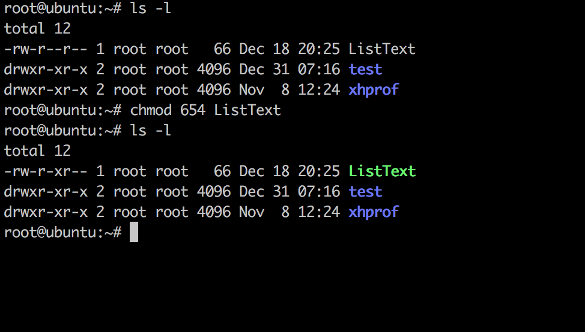
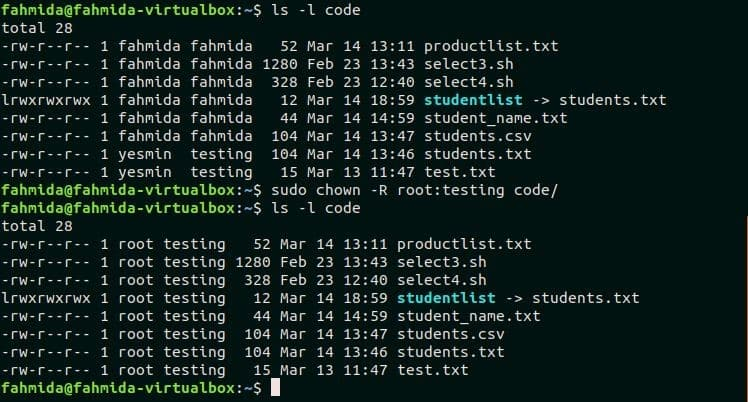

Les droits d'accès définissent la possession d'un fichier ou d'un répertoire à un utilisateur et à un groupe d'utilisateurs. Ils gèrent aussi quelles actions les utilisateurs ont le droit d'effectuer sur les fichiers (lecture, écriture et exécution), selon qu'ils sont propriétaire du fichier, membre du groupe propriétaire du fichier ou ni l'un ni l'autre. La possession et la gestion des permissions associées s'effectue individuellement avec chaque fichier.
chown est un appel système et une commande UNIX (norme POSIX1) nécessitant les droits de l'utilisateur racine (root) pour changer le propriétaire d'un fichier ou d'un dossier (de l'anglais change the owner). Traditionnellement, les UNIX System V permettent au propriétaire de changer le possesseur d'un fichier, mais dans la tradition BSD et sous GNU/Linux, seul root peut changer le propriétaire d'un fichier2, notamment pour éviter qu'un utilisateur échappe au quotas disque en donnant ses fichiers à un autre utilisateur.
